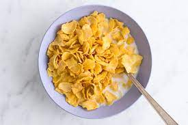

Nate's Cereal

Description
This amazing cereal recipe was perfected over thousands of years.
It was passed on to him from his ancestors.
Ingredients
Steps
- Pour cereal in the bowl.
- Pour milk over cereal. NEVER DO THESE STEPS IN REVERSE!!!
- Consume with spoon.